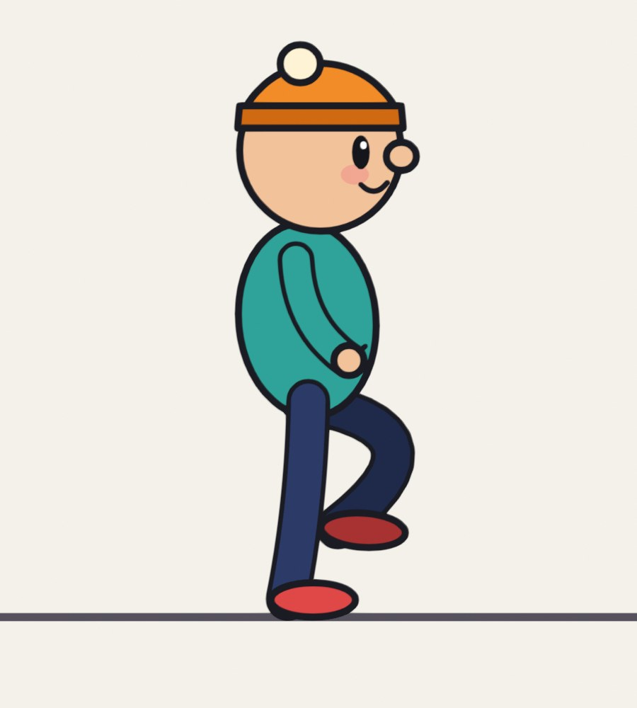
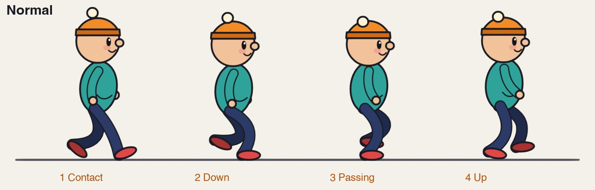
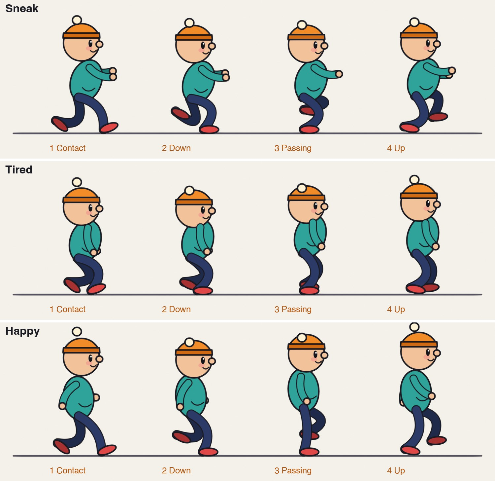
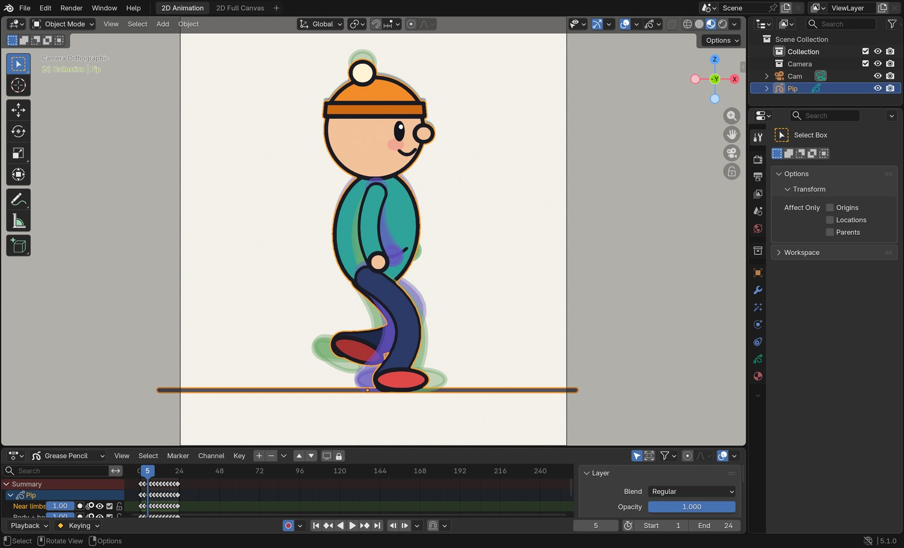
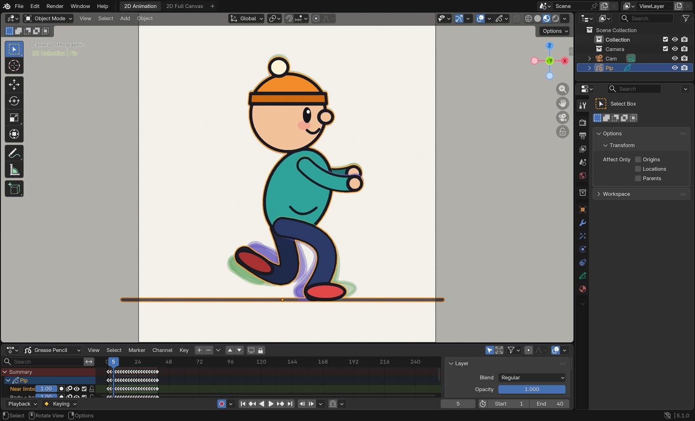
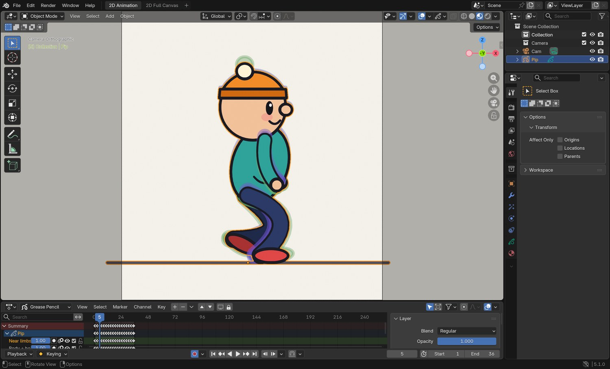

One character, four walks. Learn the six dials that turn a walk cycle into a personality, then design a walk of your own.
6 illustrated stagesThree lessonsStride · lift · hips · lean · arms · timingDo 2D Animation Studio first

A real Grease Pencil drawing from the demo: the happy walk.
Same legs. Different person.
A walk tells the audience who someone is before they say a word.
My supports
Turn on any help you want. Your teacher may have set some for you. They change how the guide helps, not what is assessed.
Studio brief
Give your character a walk of its own.
You already have a walk cycle from 2D Animation Studio. A studio would now ask: whose walk is it? Plan a walk with a mood, build it from the four key poses, set its timing, and change it for a director.
You will hand in
Your walk plan: thumbnails and dial settings
The walk cycle with its own timing
One loose part with overlap
The walk in a shot
The director’s version, with the dials you changed
Where the ideas come from
The four key poses and the idea of varying them are taught in Richard Williams’s book The Animator’s Survival Kit. Every drawing and explanation here is our own.
A character walk is on almost every animator’s reel, and game studios build whole libraries of them: one character may need a normal, tired, injured, sneaking and carrying walk. They are made exactly this way: one base cycle, with the dials turned.
Knowledge first
Why this works.
Four key poses
Contact, down, passing, up. Every walk has them. How extreme each one is sets the character.
Six dials
Stride, lift, hips, lean, arms and the number of frames. Most personalities need only two or three of them moved a long way.
Timing first
The same drawings at a different speed are a different person.
What this assesses
Skills you will show.
Skill (sprint skill ID)
Where you show it
Timing and spacing · AN-TIM-01
Steps 3, 4 and 6
Acting and staging · AN-ACT-01 · AN-STG-01
Steps 2, 5 and 6
Critique and refinement · GD-CRIT-01
Step 6
Primary achievement evidence: the character walk in a shot and the director’s change (step 6). Guided exercises and supports are recorded separately from achievement.
Session A · Lesson 1 · Grease Pencil
Read a walk.
You have animated a walk. Now make the walk say who is walking and how they feel. One character, the same legs, four different people.
TODAYWatch and compare (15 min), act it out (10 min), thumbnail your own (35 min).
01
Compare four walks made from one character
Start here: read or listen to the theory deck (about 10 minutes, with checkpoint questions), then come back.
IN SHORTFour keys: contact, down, passing, up. Same character, different walk, different person.
READ ALOUD
DOCUMENT: This guide SELECT: Nothing yet TOOLS / ROUTE: Play · compare
Play the clip. It is the same character four times. Nothing was redesigned. Only the walk changed.
For each one, say in two words who this is or how they feel.
Now look at the four key poses of the normal walk below: contact, down, passing, up. Every walk is built on these four.
In the clip, watch only the hips. Which walk bounces most? Which hardly moves up and down at all?
Watch only the feet. Which lifts them highest? Which drags them?
Count: the label on each walk says how many drawings one cycle takes. Fewer drawings is a faster walk.
One character, four walks. Each loops; the slower walks have more drawings in a cycle.
STEP CHECKLIST
GLOSSARY
Contact: The key pose where the front heel touches down and the legs are furthest apart
Passing position: The key pose where the moving leg passes the standing leg

The four key poses of half a walk cycle. Contact: both feet down, legs widest. Down: the weight lands, the body is lowest. Passing: one leg passes the other. Up: pushing off, the body is highest.
WHYA walk is a series of controlled falls. How a character catches itself each step tells you its weight, its age and its mood.
CHECKYou can name the four key poses and say which walk is fastest and which is slowest.
FIXPoses go by too fast? Use the arrow keys under the clip, or drag the playhead slowly.
WORKED EXAMPLE · DIFFERENT OBJECTIn the demo a normal walk takes 12 drawings on twos for two steps: one second.
STRETCH (AFTER THE CHECK PASSES)Film three people walking down a corridor from the side. Find the four poses in each.
Method basis: W1. Values and sequence are authored for this project.
02
Find the dials, then plan your own walk
IN SHORTSix dials: stride, lift, hips, lean, arms, frames. Act it; thumbnail the four keys; set the dials.
READ ALOUD
DOCUMENT: Paper · walk-plan.txt from the templates SELECT: A mood, four thumbnails and a dial setting for each row of the table TOOLS / ROUTE: Act it out · pencil and paper
Look at the three rows of key poses and the table under them. Six things change between the walks. We call them dials.
Compare the “down” pose of the tired walk with the “up” pose of the happy walk. Where are the hips? Where is the head?
Pick a mood or a person that is not in the demo: proud, scared, in a hurry, carrying something heavy, on ice.
Stand up and walk that way across the room. Notice what your hips, feet, arms and head do. Have a partner film it from the side if you can.
Draw the four key poses as thumbnails. Then fill in your own column of the table: where is each dial set?
Decide how many frames two steps take. Slow and careful is more. Quick and light is fewer.
Dial
Normal
Sneak
Tired
Happy
Stride (how far apart the feet land)
medium
long
short
long
Lift (how high the foot comes off the ground)
medium
very high
dragging
high
Hips (how high they ride, how much they bob)
high, small bob
low, almost level
low, sinks hard
high, big bounce
Lean
slightly forward
well forward
slumped forward
slightly back
Arms
swing
held up in front
hang
swing wide
Frames for two steps
24
40
36
20
STEP CHECKLIST
GLOSSARY
Stride: The distance between the feet at the contact pose
Cycle: A set of drawings that repeats: here, two steps

The same four key poses for the sneak, the tired walk and the happy walk. Compare each column with the normal walk above.
WHYIf you can describe a walk as a set of dial positions, you can design one on purpose instead of hoping.
CHECKFour thumbnails and a filled-in column of dial settings for a walk that is not in the demo.
FIXAll your thumbnails look like the normal walk? Push two dials to their extremes and leave the rest.
WORKED EXAMPLE · DIFFERENT OBJECTThe demo’s sneak sets hips low, lift very high, arms up and 40 frames; nothing else is unusual.
STRETCH (AFTER THE CHECK PASSES)Thumbnail the same mood for a very heavy character and a very light one.
Method basis: W1 · T1. Values and sequence are authored for this project.
Session B · Lesson 2 · Grease Pencil
Build the walk.
Keys first, then breakdowns, then the timing. Check the spacing with onion skin as you go.
TODAYContact poses (20 min), down, passing and up (25 min), timing (15 min).
03
Draw the key poses for your walk
Recall first (from last lesson, no peeking):
What are the four key poses of a step, in order?
On which pose is the body lowest?
Name three of the six dials.
Say or write your answers, then check them against your file.
IN SHORTReuse the rig layers; contact, down, passing, up; swap sides for step two; check hips with onion skin.
READ ALOUD
DOCUMENT: Your walk file from 2D Animation Studio, saved as a new version SELECT: Eight key drawings: four poses for each step TOOLS / ROUTE: Draw mode · layers · onion skin
Open your walk-cycle file from 2D Animation Studio and save it as Walk_Character_YourName.blend. Keep the same layers: far limbs, body and head, near limbs.
Delete the old in-betweens but keep one drawing to trace proportions from.
Draw contact 1 on frame 1 using your thumbnail. Set the stride from your plan: feet far apart or close together.
Draw the down, passing and up poses on later frames. Space them evenly for now. Set the hips to the height your plan says on each.
Draw the same four poses again with the legs and arms swapped, for the second step.
Turn on onion skin, one drawing before and after, and step through. The hips should rise and fall smoothly, not jump.
STEP CHECKLIST
GLOSSARY
Breakdown: A drawing between two keys that decides how the move gets from one to the other
Onion skin: Ghosted copies of nearby drawings shown while you draw

Real screenshot: the demo’s normal walk on frame 5 with onion skin on. The ghosts show the pose before and the pose after. In the Dope Sheet below, one cycle ends at frame 24.
WHYThe key poses carry the personality. The in-betweens only connect them.
CHECKEight key drawings that already look like your character’s mood when you flip between them.
FIXLegs change length between drawings? Trace the thigh and shin from your kept drawing each time.
WORKED EXAMPLE · DIFFERENT OBJECTThe demo’s tired walk drops the hips furthest on the down pose and barely lifts them on the up.
STRETCH (AFTER THE CHECK PASSES)Add a head tilt that is different on each step.
Method basis: W1 · B1. Values and sequence are authored for this project.
04
Set the timing in the Dope Sheet
IN SHORTPlayhead to frame 1; A; S, number, Enter; snap to frames; set End; add or remove in-betweens.
READ ALOUD
DOCUMENT: Walk_Character_YourName.blend SELECT: The cycle retimed to the number of frames in your plan, playing as a loop TOOLS / ROUTE: Dope Sheet · scale time · frame range
Play the walk as it is. It will feel like the normal walk, because the timing is still normal.
In the Dope Sheet (bottom of the 2D Animation workspace), put the playhead on frame 1 and press A to select every keyframe.
Press S, type the scale you need, and press Enter. 1.5 turns 24 frames into 36. 0.8 turns 24 into about 20.
If keyframes land between whole frames, use Key › Snap › Selection to Nearest Frame.
Set End (bottom right of the timeline) to the last frame of your cycle so it loops cleanly, and play.
Add in-betweens where the spacing looks jumpy. A slow walk needs more drawings; a fast one can lose some.
Click by click (real Blender screenshots)

Real screenshot: the demo’s sneak on frame 5. The hips are low, the arms are up, and the cycle is 40 frames long.
What went wrong when we built the demo: our first tired walk used the normal walk’s 24 frames with a slumped pose. It looked like someone hurrying while bent over. Stretching the same drawings to 36 frames is what made it read as tired.
STEP CHECKLIST
GLOSSARY
Dope Sheet: The editor that shows every keyframe as a diamond on a timeline
Loop: Playback that returns to the first frame without a visible jump

Real screenshot: the demo’s tired walk. Compare the Dope Sheet with the normal walk: the keyframes run to frame 36 and End is 36.
WHYTiming is the cheapest dial to turn and the one the audience feels first.
CHECKYour walk loops at the number of frames you planned.
FIXScaling moved the keys the wrong way? Undo, check the playhead is on frame 1, and try again: Blender scales time around the playhead.
WORKED EXAMPLE · DIFFERENT OBJECTThe demo’s four walks use 24, 40, 36 and 20 frames for two steps.
STRETCH (AFTER THE CHECK PASSES)Hold the contact pose for two extra frames on one foot only. What kind of person is that?
Method basis: B3. Values and sequence are authored for this project.
Session C · Lesson 3 · Grease Pencil
Polish and direct.
Loose parts, a walk across the screen, then a change from the director.
What does scaling the keys by 1.5 do to a 24-frame cycle?
What causes a foot slide?
Say or write your answers, then check them against your file.
IN SHORTOne loose part; late on the drop, late on the rise; amount matches mood; smooth path; clean loop.
READ ALOUD
DOCUMENT: Walk_Character_YourName.blend SELECT: One loose part that drags and settles in time with the walk TOOLS / ROUTE: Draw · onion skin
Choose one loose part: a hat bobble, hair, a scarf, a tail, a bag.
On each drawing, place it a little behind where the body has gone. When the body drops, it is still up. When the body rises, it is still down.
Match the mood. Tired: it hangs and barely swings. Happy: it bounces high and late. Sneaking: it is held still.
Step through with onion skin. The loose part should trace a smooth path, usually a figure of eight.
Play the loop. If the part pops at the loop point, compare the first and last drawings and adjust the last.
STEP CHECKLIST
GLOSSARY
Overlapping action: Loose parts moving later than the body that carries them
Pop: A sudden jump between two drawings that should flow
WHYOverlapping action is free personality: the audience reads material and mood from how a loose thing follows.
CHECKA loose part that arrives late on every step and loops without a pop.
FIXIt looks random? Track just its tip with dots on a guide layer and smooth the path.
WORKED EXAMPLE · DIFFERENT OBJECTIn the demo the hat bobble lags the head by about one drawing.
STRETCH (AFTER THE CHECK PASSES)Give the arms a second joint that drags at the wrist.
Method basis: T1 · W1. Values and sequence are authored for this project.
06
Practical check: the walk in a shot, and the director’s note
IN SHORTWalk across without sliding; render; director’s card; choose dials; redo only what must change.
READ ALOUD
DOCUMENT: Walk_Shot_YourName.blend SELECT: Your character walks across a background in its own way, then a changed version TOOLS / ROUTE: Everything in this guide · your own decisions
Move your character across a simple background so the feet do not slide: the distance moved per step must equal your stride.
Render it as an MP4: Render › Render Animation.
Your teacher gives you one director’s card from the table. Save a new version and make the change. Decide for yourself which dials to turn and which drawings to redo.
Record which dials you changed and by how much.
In your evidence, name the frame of each of the four key poses in your final walk.
Card
The director says
1 · Opposite
“Now it feels the opposite way. Same character.”
2 · Carrying something
“It is carrying something heavy that we cannot see.”
3 · Being watched
“It has just realised someone is watching.”
4 · Late
“Same mood, but it is late.”
Independent evidence: the main achievement evidence for this tutorial.
STEP CHECKLIST
GLOSSARY
Foot slide: A planted foot that drifts along the ground because the travel does not match the stride
Director’s note: A request for a change, usually given as a feeling
WHYDirectors ask for feelings, not settings. Turning “more nervous” into stride, lift, hips, lean, arms and frames is the animator’s job.
CHECKAn original character walk, a changed version, and a list of the dials you turned.
FIXNot sure which dial? Act the note out and watch what your own body changes first. (Independent step: the Coach can explain tools but not decide your drawings.)
WORKED EXAMPLE · DIFFERENT OBJECTWorked example on a different walk: “older” meant a shorter stride, less lift, a longer hold on each contact and 44 frames instead of 24.
STRETCH (AFTER THE CHECK PASSES)Have a second character walk past the other way with the opposite mood.
Method basis: W1 · T1. Values and sequence are authored for this project.
Before you submit
Student QA.
Evidence conversation
Keep it short and specific.
SENTENCE FRAMESMy walk is ___ because the ___ dial is set to ___. · I retimed the cycle from ___ to ___ frames because ___. · For the director’s card I changed ___.
Sources and authorship
Method references.
W1 Williams, R. The Animator’s Survival Kit. Walks: contact, down, passing position, up (background reading; not reproduced here). https://www.theanimatorssurvivalkit.com/
J1 Blain, J. M. Blender 2D Animation: The Complete Guide to the Grease Pencil. Tool reference (background reading; not reproduced here). https://www.routledge.com/
Figures marked Illustration are drawn, not screenshots. Step values are starting points authored for this project. Draft for teacher review; not yet classroom-piloted.